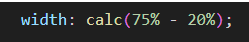
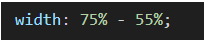
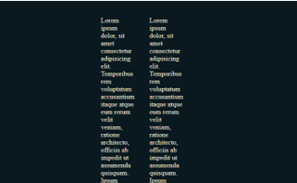
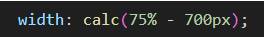
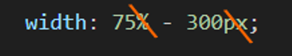

~11 Math Operators~
6/24/2024
How to use Math operators in SCSS/ CSS
When you can and cannot mix Operators
Turn on Watch SASS
How to use Math operators in SCSS/ CSS
This is just going to be a rather fast, simple tutorial to introduce you to how we would go about using math operators in calculations in SASS. And the differences of just using regular CSS and how you would do those same calculations.
In regular CSS, you need to wrap your equation in a calc method, but in SASS, we can just do the calculation.
Regular CSS

SASS

When we subtract 55% from the width of our paragraph, it does now look like crap

When you can and cannot mix Operators
In regular CSS we can mix types when we deal with calculations, but in SASS you cannot mix type.
YES, YOU CAN
Regular CSS
Now if you were to remove the calc method and just run it as a Sass calculation, with the mixing of the % sign and the px measure, you will find that the program is no longer listening to you and will just sit at the last measurement style that you wrote correctly.
NO, YOU CAN’T
SASS

For More Information
If you would really want to do a deeper dive into this area of Math Operators, you can go to these sites